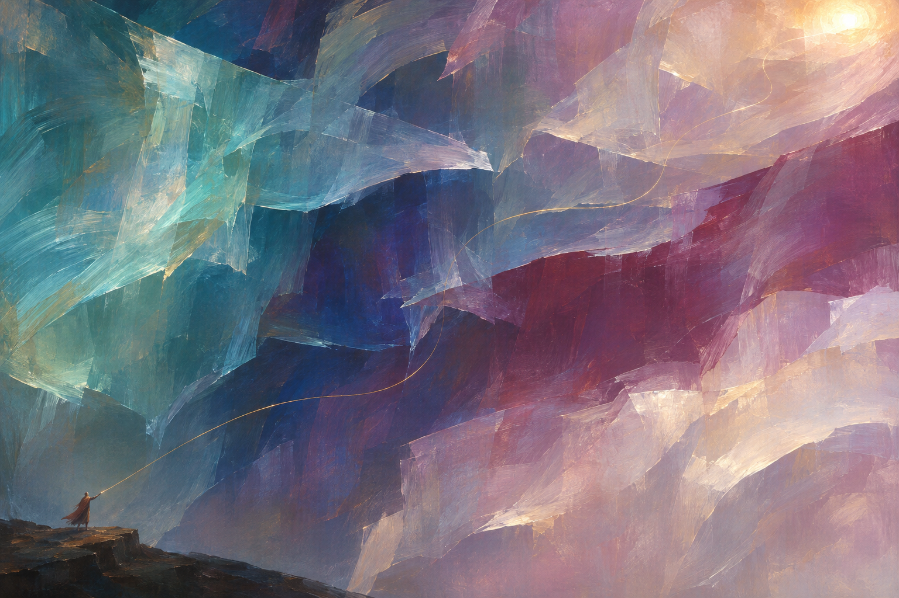
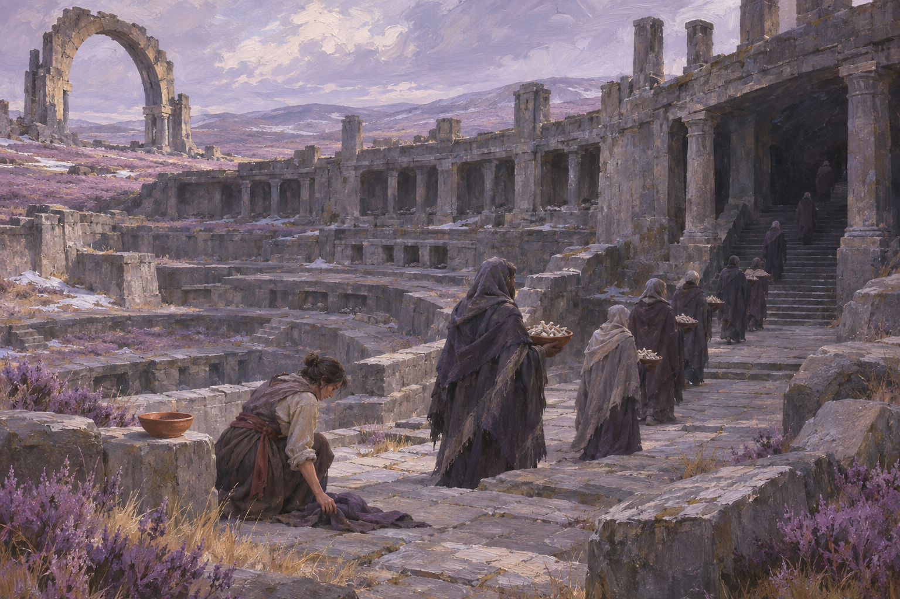

Breachline · Creator selection · 6 November 2026
Selected campaign art.
Only the gold-strand cosmology and the creator’s “Dominion sacrifice” are approved from this batch. The rejected collection and both maps have been removed from this active gallery.
Canon · 20
The Unmeasured Distance

Canon · 08
The Last Procession — Dominion sacrifice

Working revision · not canon
Ambrel: bridge correction
The bridge now meets the left bank and the court’s quay through a continuous paved approach. This repair does not approve the city’s wider design.
Open the repaired paintingDirection from this review
Distinct local communities in a world emerging from a dark age. Orcs are not Vigil aligned. Lion folk generally keep to themselves. Dominion must feel much harsher. Faces can be attractive without being uniformly perfect. Alderkin have their own lives; water infrastructure and helpfulness must not become their default story.